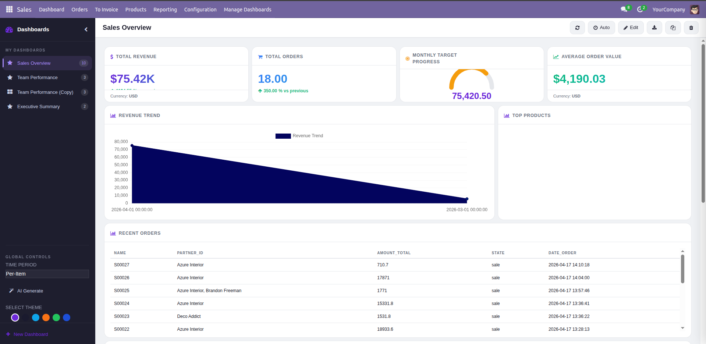
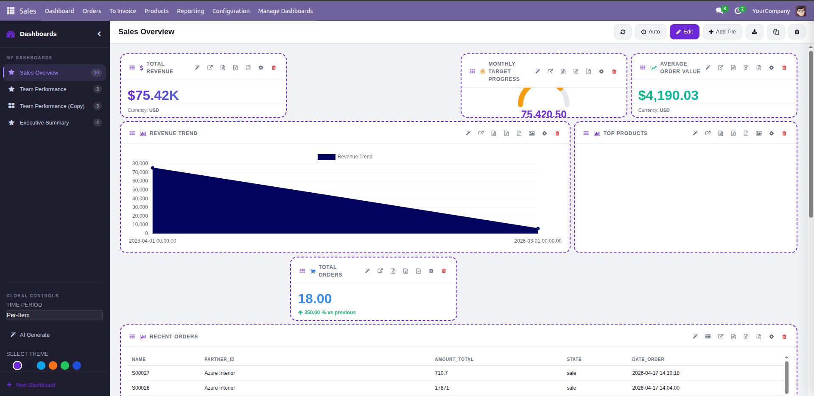
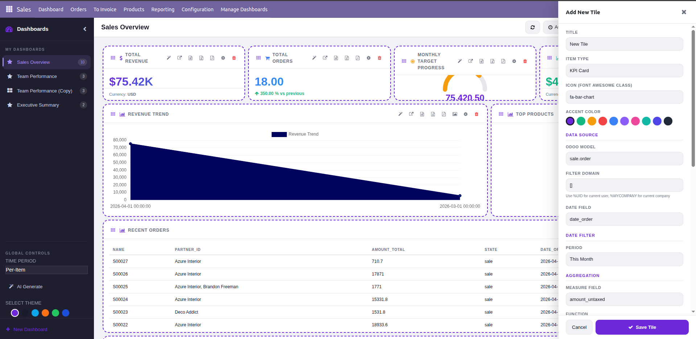
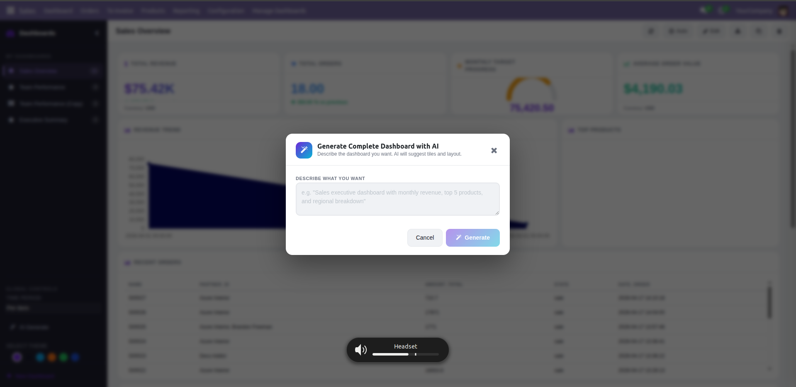

The Advanced Sales Dashboard is a feature-complete analytics module for Odoo 18 designed to give you extreme flexibility and real-time insights into your sales data. Whether you need a high-level executive overview, a localized team performance chart, or AI-driven insights extracted from your KPIs, this dashboard delivers a premium experience natively inside Odoo.
The complete high-level overview. Notice the smooth cards, the multiple chart types, and real-time polling indicators in the top header.

Clicking the Edit button reveals component gridlines and drag handles. Easily drag the (⠿) handle of any tile to move it, or drag the bottom right corner to resize.

A powerful popup lets you dictate exactly what data the new tile will display. Choose models, fields, aggregation methods, and color palettes.

Select any chart and let the integrated AI engine interpret the data trends, providing plain-text executive summaries.

advanced_sales_dashboard folder into your Odoo 18 addons path.Go to the Sales application in the Odoo Top Bar, then click the Dashboard menu item.
(⠿) grip on the top-left of any card to move it around, or use the bottom right corner handle to resize it. GridStack will automatically flow other cards around it.Click the Auto button with the clock icon in the header. If enabled, the dashboard will silently poll the server for fresh data in the background based on the configured polling interval (default 30 seconds). A pulsing "Live" indicator will appear in the top header. Any widget whose data has changed will animate gracefully.